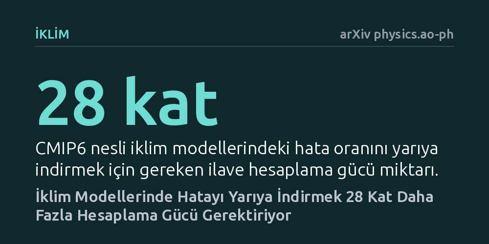

IKLIM · arXiv physics.ao-ph · 2026-10-20
Araştırmacılar, 1995'ten bu yana kullanılan 159 iklim modelini inceleyerek hesaplama gücü arttıkça tahmin doğruluğunun ne kadar geliştiğini hesapladı. Bulgular, hata payını yarıya indirmek için gereken işlem gücünün 28 kat arttığını ve yağış tahminlerindeki iyileşmenin yalnızca yüzde 7'de kaldığını gösteriyor.
İklim krizini öngörmek için kurulan dev simülasyonların kendisi de ciddi bir enerji tüketimine yol açarken, her küçük doğruluk artışı katlanarak büyüyen bir hesaplama maliyeti getiriyor.

Gezegenimizin geleceğine dair aldığımız kritik siyasi ve ekonomik kararlar, atmosferin, okyanusların ve buzulların nasıl değişeceğini öngören Dünya sistem modellerine dayanıyor. Karbon emisyonlarını sıfırlama hedefleri belirlenirken bilim dünyası bu karmaşık simülasyonların sunduğu senaryoları temel alıyor. Ancak bugüne kadar bu modellerin başarısı değerlendirilirken göz ardı edilen çok temel bir soru vardı: Bu tahminleri elde etmek için ne kadar enerji harcıyoruz?
Süper bilgisayarların tükettiği devasa elektrik miktarı, iklim bilimi topluluğunun kendi ayak izini sorgulamasına yol açıyor. Simülasyonların doğruluğunu bir nebze olsun artırmak uğruna harcanan işlem gücü arttıkça, bu araştırmaların enerji maliyeti ile bilimsel getirisi arasındaki denge daha da kritik hale geliyor. Ortadaki asıl mesele, daha fazla elektrik ve silikon yakmanın her zaman anlamlı bir öngörü başarısı sağlayıp sağlamadığıdır.
Araştırmacılar bu soruyu yanıtlamak için 1995 yılından bu yana yürütülen İklim Modeli Karşılaştırma Projesi'nin (CMIP) beş farklı nesline ait arşivleri mercek altına aldı. Toplam 159 farklı iklim modelinin geriye dönük verileri incelenerek, her bir nesilde harcanan hesaplama gücü ile modellerin gerçeğe ne kadar yaklaştığı karşılaştırıldı.
İnceleme yalnızca geleneksel fizik temelli modellerle sınırlı tutulmadı; son dönemde hızla öne çıkan makine öğrenimi temelli hava tahmin sistemleri de analize dahil edildi. Araştırma ekibi, modellerin tahmin yeteneği ile tükettikleri enerjiyi aynı potada eriten bir başarım-enerji değerlendirme çerçevesi kurgulayarak modelleri sıraladı.
Elde edilen sonuçlar, iklim modellemesinde belirgin bir azalan verim yasasının geçerli olduğunu gösteriyor. 1995'ten bu yana bilgisayar işlem gücü her ikiye katlandığında model hatası yalnızca yüzde 13,5 oranında azaldı. Daha çarpıcı olanı ise, güncel CMIP6 modellerindeki mevcut hata payını yarı yarıya düşürebilmek için tam 28 kat daha fazla hesaplama gücüne ihtiyaç duyulmasıdır.
Üstelik bu kazanımlar her iklim parametresinde eşit şekilde gerçekleşmiyor. İlk nesil CMIP1 modellerinden bu yana deniz seviyesi basıncı hataları 3,5 kat, yüzey hava sıcaklığı hataları ise 2,7 kat azaltılabilmişken, insan yaşamı ve tarım için hayati olan yağış tahminlerindeki hata payı bunca işlem gücü artışına rağmen yalnızca yüzde 7 oranında düşürülebildi.
Öte yandan, yapay zeka modelleri günlük hava tahminlerinde geleneksel sistemlerle yarışacak performansı çok daha kısa sürede sergileyebiliyor. Fakat bu modellerin hiçbiri ölçülmüş enerji tüketimini şeffaf şekilde raporlamıyor; eğitim sürecindeki enerji maliyetleri hesaba katıldığında modeller arasındaki verimlilik sıralaması tamamen değişiyor.
Bu bulgular, iklim biliminde sadece kaba işlem gücünü artırarak daha iyi sonuçlar elde etme devrinin sınırlarına dayandığını gösteriyor. Sürekli daha büyük süper bilgisayarlar kurup modellerin çözünürlüğünü artırmak, özellikle yağış gibi karmaşık süreçlerde beklenen sıçramayı tek başına sağlayamıyor.
Yazarlar, yaklaşmakta olan CMIP8 nesli öncesinde bilim dünyasını bir rota değişikliğine çağırıyor: Artık bir modelin kalitesi ölçülürken sadece fiziksel hata payına değil, o sonucu üretmek için harcanan kilowatt-saat cinsinden enerjiye de bakılmalı. Gerçek başarı, gezegeni anlamaya çalışırken eldeki hesaplama kaynaklarını en akılcı ve verimli kullanan yöntemleri geliştirmekten geçiyor.